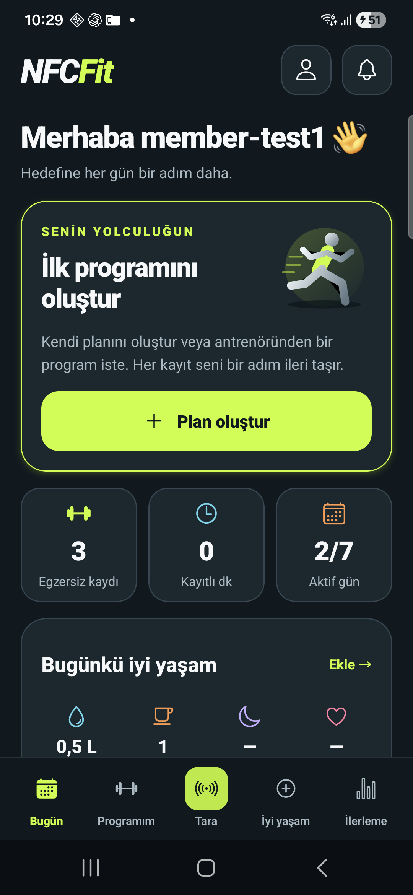
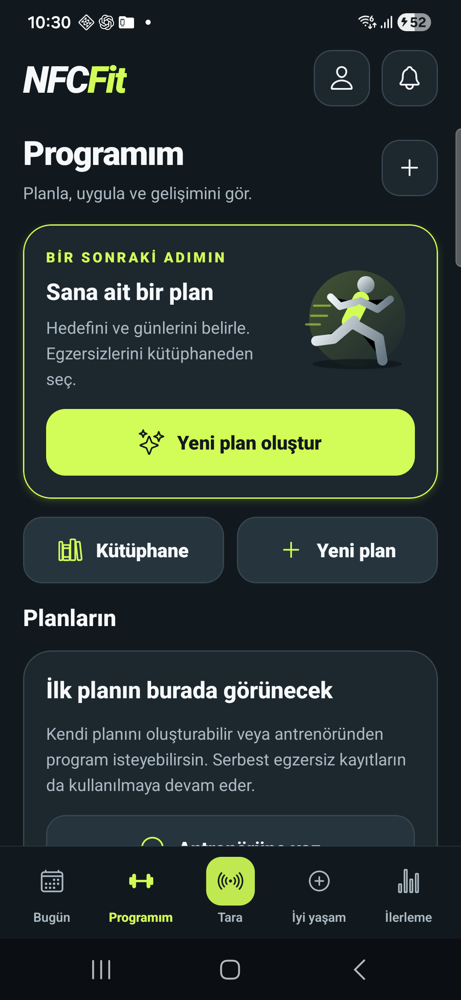
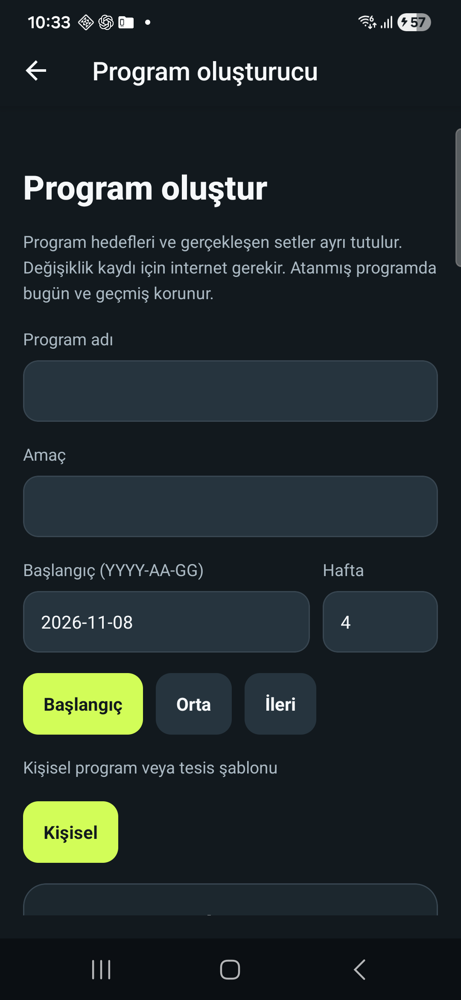

8 Kasım 2026 · Üye akışı, web ve API düzenlemeleri
Android APK 1.0.14 indir · Paket doğrulaması
| Bölüm | Görevi |
|---|---|
| Bugün | Sıradaki / devam eden antrenman, günlük gerçek toplamlar, kısa iyi yaşam özeti, salon hedefi ve son aktiviteler. |
| Programım | Haftalık takvim, telafi günü, antrenman başlatma, kütüphane ve tek plan oluşturma akışı. Boş ekranda yinelenen oluşturma düğmeleri ve boş geçmiş kutusu kaldırıldı. |
| Kart okut | Alt menüde sabit, belirgin tarama girişi. Okutma tek başına kayıt oluşturmaz. |
| İlerleme | Grafikler, gerçekleşen setler, raporlar ve salon egzersizi gelişimi. |
| Profil | Hesap, iyi yaşam, hedefler, aktivite geçmişi, kütüphane ve mesajlar. Dil/görünüm ile eşitleme/NFC tanılama kapalı bölümlerde. Üye için yönetici olma uyarısı kaldırıldı. |
Tüm plan oluşturma girişleri aynı hazırlığa gider. Üye başlangıç Tüm vücut / Core taslağı seçebilir veya kendi hedef ve günlerini belirleyebilir. Taslaklar kaydetmeden önce düzenlenebilir; kaydetmek için internet gerekir. Set ve aktivite kayıtlarında mevcut çevrimdışı kuyruk korunur.
Antrenör web alanı hazır taslakları düzenleyip tesis şablonu olarak kaydeder. Sporcu seçimi, başlangıç tarihi ve açık atama ile her üyeye bağımsız kopya verilir. Programa ve antrenmana bağlı yorum, geçmiş sürümler ve alıcı izolasyonu korunur. Yeni tarihle aynı atama kimliği yeniden kullanılamaz.
Web ve API mevcut test ortamına yayınlandı. Antrenör panelini aç. Canlı API yeni başlangıç tarihi alanını sunuyor; web dosyaları yerel derlemeyle aynı ve Android bağlantı dosyası APK imzasıyla uyumlu. Bunlar oturum açılarak yapılan tarayıcı yolculuğunun yerine geçmez.
75 mobil + 29 API/medya + 1 ayrı PostgreSQL yetki testi: 105 kontrol geçti. Mobil TypeScript ve hedefli lint, web hedefli TypeScript ve üretim derlemesi geçti. Yeni üye/antrenör yolculuğu ayrı test veritabanında, her turda yeni kullanıcılarla sınandı. Canlı test hesaplarına plan atanmadı.
Eksik kabul testleri: Tarayıcı bağlantısı kullanılamadı. Telefonun USB bağlantısı kesildi. Emülatör sistem açılışını tamamlayamadı. Bu nedenle yeni sürümün ekranları, gerçek NFC ve canlı tarayıcı antrenör yolculuğu tamamlandı sayılmıyor.
12 senaryolu ayrı NFC test kiti · Makine okunur test kapsamı ve ölçümler
Önceki 1.0.13 sürümünün gerçek Samsung ön ölçümü: yerel ilk görüntü 535 ms; PSS yaklaşık 185 MiB, RSS 282 MiB. Bunlar yeni sürümün ölçümleri veya tam veri yükleme süresi değildir. ADB ekran toplama süresi uygulama gecikmesi olarak raporlanmadı. Sıfır kare içeren grafik yüzdelikleri değerlendirmeye alınmadı.
Aşağıdaki görüntüler değişiklikten önceye aittir. Yeni sürümün onayı olarak kullanılmamalıdır.


